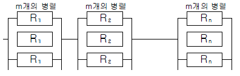
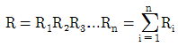
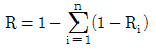
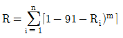
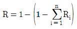
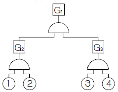
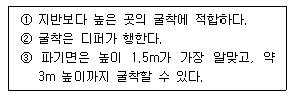
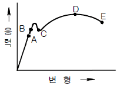
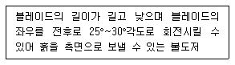

건설안전산업기사 (2007-09-02 기출문제)
1과목: 산업안전관리론
1. 강도율이 4.5인 사업장에서 한 작업자가 평생동안 근무를 한다면 재해로 인하여 당할 수 있는 근로손실일수는 얼마인가? (단, 한 작업자의 평생 근로시간은 100000시간으로 한다.)
- 450일
- 550일
- 900일
- 1350일
(정답률: 82%)

2. 국제노동기구(ILO)에서 정한 “사망 또는 영구 전노동불능”의 근로손실일수는 얼마로 산정하는가?
- 3000일
- 4000일
- 5500일
- 7500일
(정답률: 77%)
3. 재해원인 분석방법 중 사고의 형태, 기인물 등의 분류항목을 누계백분율이 큰 순서대로 도표화하여 분석하는 것은?
- 파레토도(Pareto Diagram)
- 클로즈분석(Close Analysis)
- 특성요인도(Cause & Effect Diagram)
- 관리도(Control Chart)
(정답률: 73%)
4. 사고방지대책을 수립할 때 Harvey가 제창한 3가지 시정 책(3E)으로 적당하지 않은 것은?
- 안전 교육 및 훈련
- 시설 장비의 개선
- 안전 감독의 철저
- 위험 개소의 발견
(정답률: 50%)
5. 다음 중 안전⋅보건표지 중 “인화성물질경고”에 해당하는 것은?
(정답률: 84%)
6. 인간행동과 인간의 조건 및 환경조건의 관계를 레윈은 B = f(P・E)로 표시하였다. “f"가 의미하는 것은?
- 함수관계
- 작업환경적 조건
- 인간의 성격적 조건
- 심리적 환경
(정답률: 48%)
7. 다음 중 조건반사설에 의한 학습이론의 원리에 해당하지 않는 것은?
- 강도의 원리
- 시간의 원리
- 계속성의 원리
- 효과의 원리
(정답률: 43%)
8. 다음 중 맥그리거(Mcgregor)의 X-Y 이론 중 Y이론에 해당되는 것은?
- 인간은 서로 믿을 수 없다.
- 인간은 태어나서부터 약하다.
- 인간은 정신적욕구를 우선시 한다.
- 인간은 통제에 의한 관리를 받고자 한다.
(정답률: 48%)
9. 다음 중 안전관리조직의 기본유형으로 볼 수 없는 것은?
- line system
- staff system
- line-staff system
- safety system
(정답률: 72%)
10. 재해예방의 4원칙 중 대책선정의 원칙에서 관리적 대책에 해당되지 않는 것은?
- 각종 규정 및 수칙의 준수
- 동기부여와 사기 향상
- 경영자 및 관리자의 솔선수범
- 안전교육의 실시
(정답률: 44%)
11. 다음 중 교육의 3요소가 아닌 것은?
- 강사
- 수강자
- 교육방법
- 교육자료
(정답률: 56%)
12. 어떤 상황의 판단능력과 사실의 분석 및 문제의 해결능 력을 키우기 위하여 먼저 사례를 조사하고, 문제적 사실들과 그의 상호 관계에 대하여 검토하고, 대책을 토의하도록 하는 교육기법은 무엇인가?
- 패널 디스커션(Panel discussion)
- 심포지엄(Symposium)
- 케이스 메소드(Case method)
- 롤 플레잉(Role playing)
(정답률: 64%)
13. 다음 중 O.J.T(On the Job Training)의 특징으로 가장 거리가 먼 것은?
- 개개인에게 적합한 지도훈련이 가능하다.
- 직장의 실정에 맞는 실제적인 훈련을 실시 할 수 있다.
- 교육을 통한 훈련효과에 상호 신뢰 이해도가 높다.
- 다수의 근로자들에게 조직적 훈련을 행하는 것이 가능하다.
(정답률: 77%)
14. 산업안전보건법에서 정한 해당 근로자로서 건설업에 종사하는 근로자의 채용시 교육시간으로 옳은 것은?
- 1시간 이상
- 2시간 이상
- 4시간 이상
- 8시간 이상
(정답률: 27%)
15. 안전모의 종류 중 물체의 낙하 및 비래에 의한 위험을 방지 또는 경감하고, 머리 부위 감전에 의한 위험을 방지하기 위하여 사용하는 안전모의 기호는?
- A
- AB
- AC
- AE
(정답률: 77%)
16. 다음 중 위험예지훈련 4라운드법의 진행순서로 옳은 것은?
- 본질추구 → 현상파악 → 목표설정 → 대책수립
- 현상파악 → 본질추구 → 대책수립 → 목표설정
- 현상파악 → 대책수립 → 본질추구 → 목표설정
- 목표설정 → 현상파악 → 본질추구 → 대책수립
(정답률: 80%)
17. 국제노동기구(ILO)에서 구분한 “일시 전노동불능”에 관한 설명으로 가장 적절한 것은?
- 부상의 결과로 근로기능을 완전히 잃은 부상
- 부상의 결과로 신체의 일부가 근로기능을 완전히 상실한 부상
- 의사의 소견에 따라 일정기간동안 노동에 종사할 수 없는 상해
- 의사의 소견에 따라 일시적으로 근로시간 중 치료를 받는 정도의 상해
(정답률: 70%)
18. 다음 중 부주의 현상의 하나인 “의식의 우회”에 대한 예방대책으로 가장 적절한 것은?
- 안전교육
- 표준작업제도 도입
- 상담
- 적성배치
(정답률: 54%)
19. 기업 내 교육방법 가운데 작업의 개선방법 및 사람을 다루는 방법, 작업을 가르치는 방법 등을 주된 교육내용으로 하는 것은?
- CCS(Civil Communication Section)
- MTP(Management Training Program)
- TWI(Training Within Industry)
- ATT(American Telephone & Telegram Co.)
(정답률: 56%)
20. 다음의 설명 중 적응기제의 도피적 행동인 “고립”에 해당하는 것은?
- 운동시합에서 진 선수가 컨디션이 좋지 않았다고 말한다.
- 키가 작은 사람이 키 큰 친구들과 같이 사진을 찍으려 하지 않는다.
- 자녀가 없는 여교사가 아동교육에 전념하게 되었다.
- 동생이 태어나자 형이 된 아이가 말을 더듬는다.
(정답률: 74%)
2과목: 인간공학 및 시스템안전공학
21. 시각적 부호 중 위험 표지판에 해골과 뼈를 표시하여 나타내듯이 사물이나 행동, 수정을 단순하고 정확하게 의미를 전달하기 위한 부호는?
- 추상적 부호
- 묘사적 부호
- 임의적 부호
- 상태적 부호
(정답률: 64%)
22. 다음 중 기계보다 인간이 우수한 능력으로 옳은 것은?
- 위험한 환경에서도 업무수행이 가능하다.
- 예상외로 발생한 업무에 대하여 진행이 가능하다.
- 연관이 없는 외부요인에는 둔감하다.
- 각기 다른 과업을 동시에 수행할 수 있다.
(정답률: 62%)
23. 다음 표시 장치 중 정적 표시 장치에 해당하는 것은?
- 온도계
- 속도계
- 고도계
- 도표
(정답률: 54%)
24. 인간에 대한 모니터링 방법 중 부하측정의 직접적인 방법이 아닌 것은?
- 생리학적 모니터링 방법
- 반응에 의한 모니터링 방법
- 육안 모니터링 방법
- 환경의 모니터링 방법
(정답률: 43%)
25. 다음 중 음(音)의 크기를 나타내는 단위로만 나열된 것은?
- dB, Lux
- phon. lb
- phon, dB
- dB, psi
(정답률: 64%)
26. 산업안전보건법에서 정한 물리적 인자의 분류기준에 있어서 소음성난청을 유발할 수 있는 몇 dB(A) 이상의 시끄러운 소리를 소음으로 규정하고 있는가?
- 85
- 95
- 120
- 130
(정답률: 57%)
27. 다음 중 사업장에서의 소음대책 방법으로 가장 적절하지 않은 것은?
- 소음원의 격리
- 적절한 배치
- 보호구의 착용
- 소음의 반사
(정답률: 46%)
28. 다음 중 표시장치의 지침설계에 대한 내용으로 틀린 것은?
- 지침을 눈금면에서 최대한 멀리한다.
- 원형눈금의 경우 지침의 색은 선단에서 눈금의 중심까지 칠한다.
- 지침의 끝은 작은 눈금과 겹치지 않게 한다.
- 뾰족한 지침을 사용한다.
(정답률: 75%)
29. 안전제어장치 중 사출기의 도어에 설치되어 도어가 열려 있는 경우에는 사출기가 동작되지 않도록 하는 것을 무엇이라 하는가?
- 비상제어장치
- 인터록장치
- 인트라록장치
- 트랜스록장치
(정답률: 43%)
30. 다음 중 불연속 통제장치에 해당하는 것은?
- 노브
- 페달
- 크랭크
- 토글스위치
(정답률: 62%)
31. 제조나 생산과정에서의 품질관리 미비로 생기는 고장으로, 점검작업이나 시운전으로 예방할 수 있는 고장은?
- 우발고장
- 마모고장
- 초기고장
- 평상고장
(정답률: 63%)
32. [그림]과 같이 m개 요소의 병렬작용으로 결합된 시스템의 신뢰도로 옳은 것은?





(정답률: 27%)
33. 기계의 고장율이 일정한 지수분포를 가지며, 고장율이 0.04일 때 이 기계가 10시간 동안 고장이 나지 않고 작동할 확률은?
- 0.04
- 0.67
- 0.84
- 0.96
(정답률: 25%)
34. 다음 중 결함수분석법에서 사용되는 논리게이트의 종류가 아닌 것은?
- AND게이트
- OR게이트
- 억제게이트
- 통합게이트
(정답률: 44%)
35. 다음과 같이 ①~④의 기본사상을 가진 FT도에서 minimal cut set으로 옳은 것은?

- {①, ②, ③, ④}
- {①, ③, ④}
- {①, ②}
- {③, ④}
(정답률: 43%)
36. 다음 중 조도(照度)에 대한 설명으로 가장 적절한 것은?
- 광원의 밝기를 나타낸다.
- 작업면의 밝기를 나타낸다.
- 광원에 의한 눈부심이다.
- 1촉광이 발하는 광량(光量)이다.
(정답률: 46%)
37. 손과 같은 신체부위를 반복적으로 사용하기 때문에 발생하는 질환을 무엇이라 하는가?
- CTD
- ENG
- VFF
- EEG
(정답률: 43%)
38. 청각적 표시장치에서 300m 이상의 장거리용 경보기에 사용하는 진동수로 가장 적절한 것은?
- 800Hz 전후
- 2200Hz 전후
- 3500Hz 전후
- 4000Hz 전후
(정답률: 48%)
39. 다음 중 화학설비의 안전성평가 과정에서 제3단계인 정량적평가 항목에 포함되는 것은?
- 입지조건
- 건조물
- 화학설비의용량
- 공정계통도
(정답률: 58%)
40. 다음 중 휘광(glare)이 시지각에 미치는 영향으로 옳은 것은?
- 휘도의 향상
- 가시도와 대비의 저하
- 가시도와 시성능의 저하
- 가시도와 시성능의 향상
(정답률: 30%)
3과목: 건설시공학
41. 공사현장에서 공정관리에 의한 공정표를 작성함에 있어서 가장 기본이 되는 사항은?
- 천후
- 실행예산
- 재료반입 및 노무공급계획
- 각 공종별 공사량
(정답률: 52%)
42. 어스앵커(Earth Anchor) 공법에 의한 기초 흙막이에 대한 설명으로 틀린 것은?
- 하중을 산정할 때 예상되는 수위는 항상 평균수위로 고려하여야 한다.
- 앵커체는 수평에서 하향 10°~45°범위 내에서 경제성과 안전성을 고려하여 경사각을 결정한다.
- 앵커의 내역을 확인하기 위하여 각 앵커에 작용하는 설계하중의 1.2배로 긴장하여 그 지지력을 확인한 후 설계하중으로 장착한다.
- 장착부의 해체는 채택된 방법에 맞는 것으로 하고, 긴장력을 급격히 푸는 것은 피한다.
(정답률: 41%)
43. 철골 용접접합에 대한 용어설명 중 옳지 않은 것은?
- 모살용접 : 목두께의 방향이 모재의 면과 45° 또는 거의 45°의 각을 이루는 용접
- 슬래그(slag) : 용접부에 잔류하는 산화물 등의 비금속 물질이 용접금속 속에 녹아 있는 것
- 블로 홀(blow hole) : 비드의 가장자리에서 모재가깊이 먹어들어간 것처럼 된 것.
- 오버랩(over lap) : 용접금속이 모재에 융착되지 않고 단순히 겹쳐 있는 용접
(정답률: 35%)
44. 다음 철골조에 관한 설명에서 가장 거리가 먼 것은?
- 정밀한 가공을 요한다.
- 내화적이다.
- 철근콘크리트조에 비해 경량이다.
- 고층 및 대규모 건물에 적합하다.
(정답률: 41%)
45. 철골조 건물의 연면적이 5000m2일 때 철골의 개산견적 소요량으로 적당한 것은?
- 30 ~ 40ton
- 100 ~ 250ton
- 300 ~ 400ton
- 500 ~ 750ton
(정답률: 39%)
46. 지반조사방법 중 +자형의 전단저항날개를 로드선단에 붙여 지중에 박아 넣고 회전시켜 그 때의 최대저항 치에서 지반의 전단강도를 구하는 방법은?
- 표준관입시험
- 화란식 관입시험
- 스웨덴식 사운딩시험
- 베인시험
(정답률: 68%)
47. 콘크리트의 측압에 대한 설명 중 옳지 않은 것은?
- 부어넣기 속도가 빠를수록 측압이 크다.
- 콘크리트의 비중이 클수록 측압이 크다.
- 콘크리트의 온도가 높을수록 측압이 작다.
- 진동기를 사용하여 다질수록 측압이 작다.
(정답률: 66%)
48. 거푸집의 근본적인 역할로서 가장 관계가 먼 것은?
- 콘크리트의 압축강도 조기구현
- 콘크리트가 굳기까지 형상 및 치수 확보
- 철근의 피복두께 확보를 위한 스페이서 간격 유지
- 굳지 않은 콘크리트의 흐트러짐 방지
(정답률: 50%)
49. 철근의 가공에 있어 철근의 단부에 갈고리를 만들지 않아도 되는 것은?
- 스터럽 및 띠철근
- 굴뚝의 철근
- 기둥 및 보(지중보는 제외)의 돌출부분의 철근
- 이형철근
(정답률: 23%)
50. 주문받은 건설업자가 대상계획의 기업, 금융, 토지조달, 설계, 시공 기타 모든 요소를 포괄한 도급계약 방식은?
- 실비정산 보수가산도급
- 턴키(turn-key)도급
- 정액도급
- 공동(joint venture)도급
(정답률: 65%)
51. 서중콘크리트 공사에 대한 설명으로 옳은 것은?
- 서중콘크리트란 일 평균기온이 30℃를 넘는 시기에 시공되는 콘크리트를 말한다.
- 서중콘크리트는 초기강도 발현이 빠르기 때문에 장기강도가 높다.
- 부어넣을 때의 콘크리트 온도는 40℃ 이하로 한다.
- 혼화제는 AE감수제 지연형 또는 감수제 지연형을 사용한다.
(정답률: 36%)
52. 다음 중 서로 관련이 없는 것은?
- 어스 오거(earth auger)공법 - 말뚝지정 공사
- 언더 피닝(under pinning)공법 - 철골 공사
- 올 케이싱(all casing)공법 - 제자리콘크리트말뚝 공사
- 바이브로 콤포저(vibro composer)공법 - 지반개량 공사
(정답률: 58%)
53. 건설공사 원가 구성체계에 관한 설명 중 직접공사비에 포함되지 않는 것은?
- 자재비
- 일반노무비
- 외주비
- 노무비
(정답률: 49%)
54. 토공사에 사용되는 계측기기의 연결이 옳게 된 것은?
- 간극수압의 변화 - piezo meter
- 지반의 수평변위 및 방향 측정 - load cell
- 인접구조물 기울기 측정 - lnclino meter
- 버팀대 변형 측정 - tilt meter
(정답률: 38%)
55. 다음 설명에 적합한 토공기계는?

- 불도저
- 파워쇼밸
- 드래그쇼밸
- 드래그라인
(정답률: 63%)
56. 다음 지반개량공법 중 점토질 지반에 주로 이용되는 것은?
- 웰포인트공법
- 바이브 로플로테이션공법
- 샌드드레인공법
- 언더피닝공법
(정답률: 40%)
57. 공사입찰방식의 분류에 속하지 않은 것은?
- 파트너링방식
- 공개경쟁방식
- 지명경쟁방식
- 수의계약방식
(정답률: 36%)
58. 케이싱을 직접 타격하여 땅 속에 박는 것으로 지내력의 증대를 위하여 말뚝의 선단에 구근을 형성하는 타격식 현장 콘크리트말뚝은?
- P.I.P(pack in place pile)
- M.I.P(mixed in place pile)
- 페디스탈파일(Pedestal concrete pile)
- 레이몬드파일(Raymond pile)
(정답률: 20%)
59. 철근공사의 유의사항에 대한 설명으로 옳지 않은 것은?
- 철근의 정착에서 기둥의 주근은 기초에 보의 주근은 기둥에 벽철근은 기둥보 또는 바닥판에 바닥 철근은 보 또는 벽에 정착한다.
- 철근의 이음길이는 갈고리 끝부분 간의 거리로 한다.
- 철근콘크리트 구조물에서 철근은 인장력에 유효하게 작용한다.
- 현장에 반입된 철근은 직접 지면에 닿지 않게 하고 습기로부터 보호해야 한다.
(정답률: 32%)
60. 프리스트레스트 콘크리트(Prestressed concrete)의 공법에서 포스트텐션(post-tension)방식에 관한 설명으로 옳지 않은 것은?
- 주로 설비가 좋은 공장에서 제조되므로 품질에 대한 신뢰도가 높다.
- PSC강재가 콘크리트부재와 일체로 되도록 부착되어 있는 부착시킨 공법과 부착시키지 않는 공법으로 분류할 수 있다.
- 주로 현장에서 프리스트레스를 도입하는 방법이다.
- 콘크리트 경화 후에 PSC강재에 긴장력을 작용시키고 끝부분을 콘크리트에 정착시켜 프리스트레스를 준다.
(정답률: 17%)
4과목: 건설재료학
61. 물 시멘트 비 65%로 콘크리트 1m3을 만드는데 필요한 물의 양으로 적당한 것은? (단 콘크리트 1m3 당 시멘트 8포 대(1포대=40kg)임)
- 0.1m3
- 0.2m3
- 0.3m3
- 0.4m3
(정답률: 39%)
62. 콘크리트 건조수축에 관한 설명 중 옳은 것은?
- 공기량이 같은 조건하에서 단위 골재량이 클수록 건조수축이 크다.
- W/C비가 적을수록 건조수축이 크다.
- 골재의 크기가 일정할 때 슬럼프값이 클수록 건조 수축은 작아진다.
- W/C비가 같은 경우 건조수축은 사용 단위 시멘트량이 클수록 크다.
(정답률: 27%)
63. 알루미늄과 그 합금재료의 일반적인 성질에 관한 설명중 틀린 것은?
- 비중이 철의 1/3이다.
- 내화성이 작다.
- 열⋅전기전도성이 크다.
- 산, 알칼리에 강하다.
(정답률: 62%)
64. 강(鋼)의 응력-변형도 곡선의 그림에서 A와 C점이 나타내는 것은?

- A : 탄성한도, C : 상항복점
- A : 인장강도, C : 비례한도
- A : 비례한도, C : 하항복점
- A : 하항복점, C : 파괴점
(정답률: 36%)
65. 화강암, 응회암, 사암의 3종류의 석재의 성질을 비교한 설명 중 옳은 것은?
- 응회암의 비중이 가장 크다.
- 화강암의 압축강도가 가장 크다.
- 사암의 흡수율이 가장 적다.
- 화강암의 내화성이 가장 크다.
(정답률: 41%)
66. 목재의 일반적인 성질에 대한 설명 중 옳지 않은 것은?
- 비중이 적다.
- 가공성이 좋다.
- 건조한 것은 불에 타기 쉽다.
- 열전도율이 크다.
(정답률: 49%)
67. 아스팔트와 피치(pitch)에 관한 기술로서 틀린 것은?
- 아스팔트의 단면은 광택이 있고 흑색이다.
- 피치는 아스팔트보다 냄새가 강하다.
- 아스팔트는 피치보다 내구성이 있다.
- 아스팔트는 상온에서 유동성이 없지만 가열하면 피치 보다 빨리 부드러워진다.
(정답률: 49%)
68. 석고보드의 일반적인 특징에 대한 설명으로 옳지 않은 것은?
- 수축률이 크고 단열성이 낮다.
- 방화성능 및 보온성이 우수하다.
- 흡습되면 강도, 강성이 저하된다.
- 부식이 안되고 충해를 받지 않는다.
(정답률: 39%)
69. 긴 판을 가공하여 강당 등의 음향조절용으로 이용되며, 의장 효과도 겸할 수 있는 목재 제품은?
- 코펜하겐 리브
- 파키트 보드
- 플로링 패널
- 파키트 블록
(정답률: 59%)
70. 멜라민수지에 관한 설명 중 옳지 않은 것은?
- 무색투명하며 착색이 자유롭다.
- 내열성이 600℃정도로 높다.
- 전기절연성이 우수하다.
- 판재류, 식기류, 전화기 등에 쓰인다.
(정답률: 55%)
71. 콘크리트용 보통골재에 관한 설명으로 옳지 않은 것은?
- 잔골재의 염화물(NaCI)허용한도는 0.04%이다.
- 골재의 절대건조밀도(g/cm3 )는 2.5 이상이어야 한다.
- 굵은골재의 최대치수는 철근간격의 4/5 이하로 해야 한다.
- 잔골재의 조립률은 3~4 정도가 적당하다.
(정답률: 16%)
72. 수화속도를 지연시켜 수화열을 작게 한 시멘트로, 건조수축이 작고 내황산염이 크며, 건축용 매스콘크리트 등에 사용되는 시멘트는?
- 중용열 포틀랜드시멘트
- 조강 포틀랜드시멘트
- 초조강 포틀랜드시멘트
- 백색 포틀랜드시멘트
(정답률: 59%)
73. 다음의 점토제품 중 흡수율이 가장 작은 것은?
- 도기
- 토기
- 석기
- 자기
(정답률: 68%)
74. 강(鋼)에 함유된 탄소성분이 강에 미치는 영향이 아닌것은?
- 강도
- 신율
- 내산성
- 경도
(정답률: 24%)
75. 각종 합성수지의 성질에 대한 설명으로 틀린 것은?
- 아크릴수지는 투명도가 높고, 열팽창성이 낮아 채광판으로 쓰이나 내충격강도는 낮다.
- 폴리스틸렌 수지는 기계적 강도, 내구성이 좋다.
- 실리콘수지는 발수성이 높아 건축물, 전기절연물 등의 방수에 쓰인다.
- 불소수지는 -100℃의 저온에서도 성질의 변화가 거의 없다.
(정답률: 21%)
76. 골재의 함수상태 중 콘크리트 시방배합시 기준이 되는 상태는?
- 절건상태
- 기건상태
- 표건상태
- 습윤상태
(정답률: 52%)
77. 시멘트콘크리트 제품 중 대리석의 쇄석을 종석으로 하여 대리석과 같이 미려한 광택을 갖도록 마감한 것은?
- 석면
- 테라조
- 질석
- 고압벽돌
(정답률: 67%)
78. 다음 중 마루판으로의 사용이 가장 적당하지 않은 것은?
- 코펜하겐 리브
- 플로링 보드
- 파키트 블록
- 파키트 패널
(정답률: 60%)
79. 거푸집 속에 굵은 골재를 먼저 채우고 난 후 특수혼화제를 섞어서 만든 모르타르를 주입하여 만드는 특수콘크리트는?
- AE 콘크리트
- 프리팩트 콘크리트
- 진공 콘크리트
- 중량 콘크리트
(정답률: 46%)
80. 다음 중 미장바름에 쓰이는 착색제에 요구되는 성질과 가장 거리가 먼 것은?
- 물에 녹지 않아야 한다.
- 내알칼리성이어야 한다.
- 입자가 굵어야 한다.
- 미장재료에 나쁜 영향을 주지 않는 것이어야 한다.
(정답률: 57%)
5과목: 건설안전기술
81. 공사현장 안전관리계획 작성시 고려사항과 가장 거리가 먼 것은?
- 입지 및 환경조건
- 안전관리 중점목표
- 공정, 공종별 위험요소 판단
- 공사성과의 분석 및 개선방법
(정답률: 57%)
82. 다음 중 추락재해의 원인과 거리가 먼 것은?
- 안전대를 부착하지 않았다.
- 작업대의 발판이 좁았다.
- 토사를 안전한 기울기로 굴착하지 않았다.
- 안전난간을 설치하지 않았다.
(정답률: 55%)
83. 계단의 개방된 측면에 안전난간을 설치할 때 준수하여야 할 기준으로 틀린 것은?
- 안전난간은 임의의 점에서 임의의 방향으로 움직이는 100kg 이상의 하중에 견딜 수 있는 튼튼한 구조일 것
- 상부난간대는 경사로의 표면으로부터 90cm 이상 120cm 이하에 설치할 것
- 난간기둥은 상부난간대와 중간난간대를 견고하게 떠받칠 수 있도록 적정간격을 유지할 것
- 난간대는 지름 5cm 이상의 금속제 파이프나 그 이상의 강도를 가진 재료일 것
(정답률: 52%)
84. 붕괴 등의 방지를 위하여 터널지보공을 설치한 후에 수시로 점검하여야 할 사항으로 가장 거리가 먼 것은?
- 부재의 손상⋅변형⋅부식⋅변위 탈락의 유무 및 상태
- 통신설비의 상태
- 부재의 접속부 및 교차부의 상태
- 기둥침하의 유무 및 상태
(정답률: 73%)
85. 다음 중 수중 굴착작업시 가장 적합한 공법은?
- 아일랜드(Ireland) 공법
- 트랜치 컷(Trench Cut) 공법
- 케이슨(Caisson) 공법
- 플로팅(Floating) 공법
(정답률: 42%)
86. 비계의 구비요건이 아닌 것은?
- 안전성
- 작업성
- 영구성
- 경제성
(정답률: 74%)
87. 벽체 콘크리트 타설시 거푸집이 터져서 콘크리트가 쏟아진 사고가 발생하였다. 다음 중 이 사고의 주요원인으로 추정할 수 있는 것은?
- 콘크리트를 부어넣는 속도가 빨랐다.
- 전동기를 사용하지 않았다.
- 철근 사용량이 적었다.
- 시멘트 사용량이 많았다.
(정답률: 38%)
88. 가설비계의 종류가 아닌 것은?
- 말비계
- 달대비계
- 사다리비계
- 이동식비계
(정답률: 49%)
89. 다음 유해・위험방지계획서 제출대상 사업 중 고용노동부령으로 정하는 규모의 사업으로 틀린 것은?
- 터널건설 등의 공사
- 깊이 10미터 이상인 굴착공사
- 지상높이 10미터 이상인 건축물
- 최대 지간길이가 50미터 이상인 교량건설 등의 공사
(정답률: 57%)
90. PC(Precast Concrete) 조립시 안전대책으로 옳지 않은 것은?
- 신호수를 지정한다.
- 인양 PC부재 아래에 근로자 출입을 금지한다.
- 크레인에 PC부재를 달아 올린 채 주행한다.
- 운전자는 PC부재를 달아 올린 채 운전대에서 이탈을 금지한다.
(정답률: 68%)
91. 콘크리트건물 해체작업 공법이 아닌 것은?
- 전도 공법
- 화약발파 공법
- 오픈컷 공법
- 팽창압 공법
(정답률: 58%)
92. 프리캐스트 부재의 현장야적에 대한 설명으로 옳지 않은 것은?
- 오물로 인한 부재의 변질을 방지한다.
- 벽 부재는 변형을 방지하기 위해 수평으로 포개 쌓아 놓는다.
- 부재의 제조번호, 기호 등을 식별하기 쉽게 야적한다.
- 받침대를 설치하여 휨, 균열 등이 생기기 않게 한다.
(정답률: 75%)
93. 낙하물방지망의 설치시 준수하여야 할 기준으로 옳은 것은?
- 설치높이는 10m 이내마다 설치한다.
- 내민길이는 벽면으로부터 1m 이상으로 한다.
- 수평면과의 각도는 45°를 유지한다.
- 최소 500kg 이상의 하중에 견딜 수 있어야 한다.
(정답률: 58%)
94. 다음 중 추락재해를 방지하기 위하여 10cm 그물코인 방망을 설치할 때 방망과 바닥면 사이의 최소높이는? (단, 설치된 방망의 단변 방향 길이 L=2m, 설치된 방망의 지지간격 A=3m이다.)
- 2.0m
- 2.4m
- 3.0m
- 3.4m
(정답률: 48%)
95. 지게차의 작업시작전 점검사항으로 옳지 않은 것은?
- 제동장치 및 조종장치 기능의 이상 유무
- 하역장치 및 유압장치 기능의 이상 유무
- 버팀의 방법 및 고정상태의 이상 유무
- 전조등⋅후미등⋅방향지시기 및 경보장치 기능의 이상 유무
(정답률: 54%)
96. 강관틀비계 조립시 준수사항으로 틀린 것은?
- 높이가 20미터를 초과하거나 중량물의 적재를 수반하는 작업을 할 경우에는 주틀 간의 간격이 1.8미터 이하로 할 것
- 주틀 간에 교차 가새를 설치하고 최하층 및 6층 이내마다 수평재를 설치할 것
- 수직방향으로 6미터, 수평방향으로 8미터 이내마다 벽이음을 할 것
- 길이가 띠장 방향으로 4미터 이하이고 높이가 10미터를 초과하는 경우에는 10미터 이내마다 띠장 방향으로 버팀기둥을 설치할 것
(정답률: 48%)
97. 불도저의 종류 중 아래에서 설명하는 불도저의 명칭은?

- 틸트 도저
- 스트레이트 도저
- 앵글 도저
- 터나 도저
(정답률: 65%)
98. 운반하여 작업(걸이작업)을 시행할 때 준수하여야할 작업지침에 대한 설명으로 틀린 것은?
- 2줄 걸이 이상을 사용한다.
- 와이어로프 등은 크레인의 후크 중심에 걸어야 한다.
- 근로자를 매달린 물체위에 탑승시켜서는 안된다.
- 걸이작업의 매다는 각도는 90°를 표준으로 한다.
(정답률: 56%)
99. 산업안전보건법령에 따라 사다리식 통로를 설치하는 경우 준수하여야 하는 사항으로 틀린 것은?
- 폭은 30센티미터 이상으로 할 것
- 발판의 간격을 동일하게 할 것
- 기둥과 수평면과의 각도는 85도 이하로 할 것
- 다리분분은 미끄럼방지장치를 설치할 것
(정답률: 58%)
100. 산소결핍위험장소인 밀폐공간내의 작업조치사항에 대한 설명으로 틀린 것은?
- 작업시작 전 공기 중의 산소농도 측정
- 작업을 할 때 산소농도를 18% 이상 유지
- 방진마스크 착용
- 산소결핍장소에서 근로자를 구출할 때 공기 호흡기 착용
(정답률: 39%)